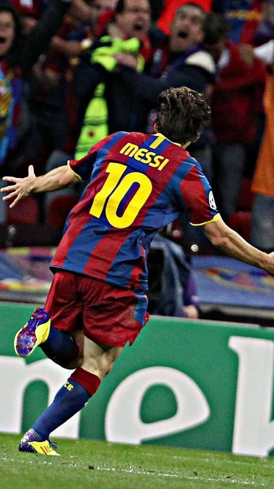

INFANCIA
Lionel Andrés Messi (alias Leo, Lio, La Pulga, La Pulga Atómica, El Mesías) nació el 24 de junio de 1987 en la ciudad argentina de Rosario. Se crió junto a tres hermanos en un barrio obrero llamado General Las Heras. A los 5 años de edad, empezó a jugar en el Grandoli, un pequeño club de barrio en el que su familia estaba muy involucrada. Al cumplir 8, Leo ya estaba jugando para las categorías inferiores de Newell's Old Boys, un importante club profesional de Rosario. Visiblemente más chico que la mayoría de los niños de su edad, a Lionel Messi le terminaron por diagnosticar una deficiencia de la hormona de crecimiento. Su padre acudió sin éxito a distintos clubs de fútbol de Argentina buscando que le financiaran el costoso tratamiento, lo que casi hizo peligrar la promisoria carrera que vislumbraba para Leo. En el 2000, a los 13 años, Lionel Messi firmó con el Fútbol Club Barcelona y se mudó con su familia a España, ya que el club catalán aceptó hacerse cargo de los tratamientos con hormonas como parte del contrato. Tras progresar rápidamente por la academia juvenil del Barcelona, «La Masia», Leo hizo su debut en la temporada 2004-05, a los 17 años.
BARCELONA
Primeros Años
Comenzó la pretemporada 2004-2005 jugando amistosos con el primer equipo: ante el Banyoles, el Figueres, el Palamós, el Hércules y el Olympique de Marsella, donde fue titular por primera vez. Contra el Palamós el 20 de julio en el Camp Nou, en el minuto '74, anotó su primer gol, que puso el 0-4 parcial de un partido que el Barcelona ganó 0-6 Participó también en el On Tour Asia, una gira promocional del club por Corea, China y Japón en la que se jugaron cuatro amistosos. Convirtió un gol el 1 de agosto en el 5-0 ante el Kashima Antlers. Aunque sabía que podía funcionar como atacante en cualquier posición, Rikjaard lo hizo jugar como extremo derecho, puesto que tenía Giuly. Messi jugó su primer partido oficial el 16 de octubre, el derby barcelonés contra el Espanyol en el estadio Olímpico Lluís Companys, cuando sustituyó a Deco ocho minutos antes de terminar el encuentro. Con diecisiete años, tres meses y veintidós días, se convirtió en uno de los canteranos más jóvenes en debutar en La Liga. El 27 de octubre, ante el Gramenet, jugó por primera vez en la Copa del Rey y el 7 de diciembre en la Liga de Campeones 2004-2005 frente al FC Shakhtar Donetsk en el Donbass Arena. Hacia fines de ese año, el diario El País lo señalaba como "la gran promesa". En un partido de La Liga contra el Albacete Balompié el 1 de mayo de 2005, tras asistencia de Ronaldinho, Messi anotó, de vaselina, su primer gol oficial, después de que le anularan otro parecido por estar en offside. Con diecisiete años, 10 meses y 7 días, se convirtió en el jugador más joven del Barcelona en hacer un gol en ese torneo, marca que superó Bojan Krkić en 2007. Luego de cinco temporadas sin conseguir el título, el 14 de mayo el Barcelona empató 1-1 contra el Levante y fue campeón de La Liga tres jornadas antes de la finalización del torneo. En junio, Messi firmó su primer contrato como jugador del primer equipo, que lo vinculaba con el club hasta 2010 y tenía una cláusula de rescisión de 150 millones de euros, similar a las de Ronaldinho y Samuel Eto'o, jugadores ya establecidos en el plantel
Paris Saint-Germain F. C.
2021-2022: octavo Pichichi y séptimo Balón de Oro
Mbappé, Messi y Neymar en el PSG en 2021. El 10 de agosto, Messi firmó con Paris Saint-Germain un contrato por dos años, con opción de extenderlo una temporada. Se le fijó el salario en 6,5 millones de euros y se le dio el dorsal 30, el mismo con el que debutó en el Barcelona. Ese mismo día, el club anunció su llegada con un video en sus redes sociales. Messi jugó su primer partido el 29 de ese mes, ante el Stade de Reims por la cuarta fecha de la Ligue 1. Ingresó al campo en el minuto '65, en sustitución de Neymar. El partido acabó 0-2 a favor del equipo parisino. El 28 de septiembre, en la segunda jornada del Grupo A de la Liga de Campeones ante el Manchester City de Guardiola, que el PSG ganó 2-0, marcó su primer gol después de una pared con Mbappé. Alcanzó así la marca de Benzema de diecisiete temporadas consecutivas anotando en esa competición. El 19 de octubre, en el 3-2 ante el Leipzig en el tercer partido de clasificación en la Liga de Campeones,hizo su primer doblete, el segundo gol, de penal a lo Panenka, después de una falta sobre Mbappé en el área rival. Messi será el jugador que más Balones de Oro gane en la historia. Probablemente ganará cinco, seis o siete Balones de Oro, es imparable. —- Johan Cruyff al diario argentino Olé en enero de 2012, cuando Messi era candidato a su tercer Balón de Oro. El 20 de noviembre, por la decimocuarta fecha, anotó su primer gol en la Ligue 1 en el 3-1 ante el Nantes. El 28, marcó un hat-trick de asistencias frente al Saint-Étienne, dos a Marquinhos y una a Ángel Di María, en el 1-3 de su equipo en el estadio Geoffroy-Guichard. Al día siguiente, ganó su octavo Pichichi y su séptimo Balón de Oro. Periodistas, jugadores y ex jugadores cuestionaron esa elección, a tal punto que France Football decidió modificar los criterios de selección y evaluación del premio. El 7 de diciembre, en la última jornada de clasificación para octavos de final de la Liga de Campeones, anotó otro doblete en el 4-1 ante el Brujas. En ese partido, igualó a Cristiano Ronaldo como jugador que a más equipos (38) les ha convertido goles en la competición europea y, con 758 goles como profesional, superó a Pelé (757). En diciembre, la IFFHS lo incluyó en el equipo Conmebol del año y lo reconoció como mejor jugador y creador de juego de esa confederación. Durante sus vacaciones en Argentina, Messi se contagió coronavirus, por lo que tuvo que aislarse en su casa de Funes desde el 28 de diciembre. Tras dar negativo en una nueva PCR, el 5 de enero pudo volver a París, donde se le realizarían exámenes para descartar secuelas. El 22 jugó su primer partido del año, por la vigésimo segunda fecha de la Ligue 1 ante el Reims. Entró en la segunda mitad del encuentro, que su equipo ganó 4-0. El 17 de enero, fue incluido en el FIFA/FIFPro World XI por decimoquinta vez consecutiva. El 31 de enero de 2022, frente a Niza en octavos de final de la Copa de Francia 2021-22, jugó un partido regular, pero anotó en la tanda de penales tras el empate 0-0. El PSG perdió 6-5 y quedó eliminado, después de haber ganado ese torneo en seis de los siete años anteriores. El 15 de febrero, en octavos de final de la Champions League 2021-22 ante el Real Madrid, erró un penal en el partido de ida que terminó 1-0 con gol de Mbappé. En la vuelta en el Santiago Bernabéu el 9 de marzo, el PSG quedó eliminado tras perder 3-1. Algunos medios franceses criticaron el desempeño de Messi en ambos partidos: L'Équipe lo calificó primero con un 3 y con un 6 en el segundo encuentro, para el que Le Parisien le puso un 4. En el siguiente encuentro como locales, ante el Bordeaux, los jugadores del PSG fueron abucheados y silbados, especialmente Messi y Neymar. Con 125 goles, Messi figuró en el segundo puesto de la lista de Máximos goleadores históricos de la Champions League, por detrás de Cristiano Ronaldo, con 140. Ambos jugadores son los únicos en haber marcado más de cien veces en la historia de ese torneo. El 23 de abril, ganó su primer título con el PSG, la Ligue 1. Con once goles y catorce asistencias en 33 partidos, fue la temporada que menos jugó y anotó, si se exceptúan las dos primeras con el Barcelona.
2022-2023
El 31 de julio, en el Estadio de Bloomfield de Tel Aviv, Messi marcó, con la derecha, el primer gol del 4-0 contra Nantes, resultado con el que el PSG ganó la Supercopa de Francia, su primer título de la temporada. El 6 de agosto, en la primera fecha de la Ligue 1, jugada en el Stade Gabriel Montpied contra Clermont Foot, hizo un doblete en el 5-0 de su equipo. El segundo gol, anotado de chilena, fue el primero que marcó de esta forma. En enero de 2023, la IFFHS lo reconoció Mejor Goleador Internacional y Mejor Jugador del Mundo, en el segundo caso por una significativa diferencia de votos (275 contra 35 y 30) con Mbappé y Benzema. El 26 de febrero, frente al Olympique de Marsella por la Ligue 1, tras una asistencia de Mbappé, anotó su gol número 700 en clubes. Al día siguiente, ganó su segundo premio The Best.
SELECCION ARGENTINA
Categorías inferiores
Placa dedicada a Messi en el Paseo de los Olímpicos de Rosario En 2002, Jorge Messi le hizo llegar a Hugo Tocalli, responsable de las divisiones juveniles de Argentina, un video compilatorio de las jugadas de su hijo. A pesar de reconocer las cualidades del adolescente, el entrenador le respondió que no podía incorporarlo al plantel, porque ya tenía definido el equipo para el Mundial del año siguiente en Finlandia, pero que lo tendría en cuenta para otra competición. En 2003, sin embargo, y aunque sabía que la Federación Española de Fútbol quería ficharlo para su selección sub-17, tampoco lo convocó para el Mundial Sub-20 en Emiratos Árabes. El 30 de marzo de 2004, se reunió con el presidente de la AFA Julio Grondona y, por sugerencia de José Pékerman (quien había visto a Messi contra el Alcorcón), le propuso organizar un encuentro amistoso para impedir toda posibilidad de que jugara para España. En abril, finalmente, Messi recibió una citación por fax para un entrenamiento en junio en el predio de Ezeiza. El jugador ya había declinado, alrededor de 2003, reiteradas ofertas de jugar para España, porque quería representar a su país. El 29 de junio de 2004, casi desconocido en Argentina, debutó en el estadio Diego Armando Maradona de Buenos Aires, en la categoría sub-20, en un partido amistoso con una sub-22 de Paraguay armada para la ocasión que arbitró Gabriel Brazenas. Ingresó en el segundo tiempo por Ezequiel Lavezzi e hizo un gol y dos asistencias en un encuentro que finalizó 8-0 a favor de Argentina. El 3 de julio, contra Uruguay en el estadio Suppicci de Colonia, hizo un doblete en otro amistoso que Argentina ganó 4-1.452 Con solo estos dos partidos jugados, a fines de diciembre Tocalli lo convocó para el Sudamericano Sub-20 de principios del año siguiente, aunque, por decisión conjunta con Pékerman, jugaría siempre como suplente.
Sudamericano Sub-20 2005
En el primer partido de Argentina en el Campeonato Sudamericano Sub-20 de Colombia, el 13 de enero contra Venezuela, Messi entró a los 59 minutos por Lavezzi y anotó el segundo gol del 3-0. El 15, convirtió un doblete en el 4-0 a Bolivia. Fue titular por primera vez el 17 en el 6-0 ante Perú, donde marcó el quinto gol. En el 1-1 con Colombia el 21, volvió a ser suplente y no convirtió. En la hexagonal final, Argentina le ganó 1-0 a Venezuela, con gol en contra de José Luis Granados el 25 de enero, empató 1-1 con Chile el 27, 0-0 ante Uruguay el 30 y 1-1 con Colombia el 2 de febrero.El 6 de febrero, en el clásico de América contra Brasil, ganó 2-1 con un gol de Messi, quien había ingresado en el minuto 65, y se clasificó en tercer lugar al torneo mundialista que tendría lugar en Países Bajos. Messi, con cinco tantos, ocupó el segundo puesto en la tabla de goleadores.
Mundial Sub-20 2005
El 11 de junio, Messi no fue titular en el primer partido de Argentina en el Mundial Sub-20 de Países Bajos contra Estados Unidos, pero sí en los otros seis. Como no había querido exigirlo porque tenía una contractura, el DT Francisco Ferraro lo hizo ingresar en el segundo tiempo del encuentro que Argentina perdió 1-0. En el 2-0 contra Egipto el 14, Messi metió un gol y, el 18, inició con un centro la jugada del gol de Neri Cardozo en el 1-0 contra Alemania. El 22, en octavos de final, puso el 1-1 parcial en el 2-1 contra Colombia, en cuartos el 25, dio una asistencia y marcó el último gol en el 3-1 contra España y, el 28 en semifinales, anotó el primer gol del 2-1 frente a Brasil. En la final contra Nigeria el 2 de julio, ejecutó dos penales con los que su equipo ganó 2-1. Al final del campeonato, recibió la Bota de Oro y el Balón de Oro. Su participación en los dos torneos juveniles supuso una mayor repercusión a nivel internacional y también que comenzara a hacerse conocido en Argentina. Hacia fines de ese año, el diario La Nación lo señalaba como la revelación del fútbol argentino y posible sucesor de Maradona, mientras que Clarín le otorgó el Clarín de Oro a la Revelación del año y el Círculo de Periodistas Deportivos, el premio Olimpia.
Juegos Olímpicos 2008
Messi en semifinales frente a Brasil en los Juegos Olímpicos de Pekín 2008 El 24 de mayo de 2008, Messi jugó por primera vez con la selección sub-23, dirigida por Sergio Batista, en un amistoso contra Cataluña que Argentina ganó 1-0. El 17 de junio, el Barcelona le informó a la AFA que no cedería a Messi para los Juegos Olímpicos de Pekín por considerar que, al no ser una competición oficial de la FIFA, la reglamentación no lo obligaba y porque quería contar con "una de las piezas claves del equipo" en las preliminares de la Liga de Campeones. La AFA, entonces, solicitó la intervención de la FIFA, que dictaminó que era obligatorio ceder a los jugadores menores de veintitrés años. Por consiguiente, el 3 de julio el técnico lo incluyó en el plantel que jugaría en Beijing, con la idea de que fuera su "principal carta ofensiva". Como el Barcelona no cejaba en su postura, Jacques Rogge, presidente del Comité Olímpico Internacional, anticipó el 19 de julio que, de seguir en su negativa, el club no podría contar con Messi hasta el 24 de agosto, mientras que el presidente de la FIFA, Joseph Blatter, demandó cuatro días más tarde que dejara ir al jugador. Tras el fallo final de la FIFA a favor de la AFA el 30 de julio, el Barcelona decidió llevar el litigio al Tribunal de Arbitraje Deportivo (TAS), que el 6 de agosto anuló la obligatoriedad de liberarlo. Messi, mientras tanto, había viajado el 31 de julio a Beijing, porque Batista había dicho que no podía seguir esperándolo. Finalmente, el 8 de agosto Txiki Begiristain, secretario técnico del Barcelona, anunció que había acordado con Grondona que se le permitiría al jugador seguir en Beijing, si la AFA costeaba el seguro médico en caso de lesión y no lo convocaba para ningún amistoso de la temporada. El 7 de agosto, ante Costa de Marfil, Messi marcó el primer gol y asistió a Lautaro Acosta en el segundo, con el que Argentina ganó 2-1. Jugó ante Australia el 10 de agosto, pero no el 13 frente a Serbia, ya que Batista había decidido reservarlo para los cuartos de final.[cita requerida] En cuartos de final contra Países Bajos, metió el primer gol, tras eludir al arquero. Después del empate del contrario, en el último minuto del primer tiempo adicional le dio un pase a Di María, quien convirtió otro gol. El 19 de agosto, frente a Brasil, realizó un muy buen partido, que finalizó 3-0 con dos goles de Sergio Agüero y uno de Juan Román Riquelme. El 23 de agosto, después de ganarle 1-0 a Nigeria en el Estadio Nacional, con asistencia de Messi para el gol de Di María, los jugadores argentinos recibieron el oro olímpico.
Etapa Pékerman
Primeras convocatorias (2005-2006)
Messi, máximo goleador histórico y capitán por más de diez años de la selección argentina. El 2 de agosto de 2005, Pékerman convocó por primera vez a Messi para jugar con la selección absoluta.El jugador debutó el 17 de agosto en un amistoso con Hungría que Argentina ganó 2-1 en el estadio Ferenc Puskás de Budapest. Ingresó en el minuto 66 y llegó a tocar tres pelotas, pero 1m32s después fue expulsado por Markus Merk tras un gesto brusco hacia el defensor Vilmos Vanczák, que lo había tironeado de la camiseta. Jugó su primer partido oficial el 3 de septiembre, en las eliminatorias del Mundial 2006 contra Paraguay en Asunción. Entró en el minuto '80 del partido que Argentina perdió 1-0. Fue titular el 9 de octubre frente a Perú en el estadio Monumental de Buenos Aires, donde jugó por primera vez en su país natal. A pesar de que aún era poco conocido, los hinchas argentinos lo ovacionaron antes y después del partido, en el que fue la figura. En la última fecha de eliminatorias, el 12 de octubre ante Uruguay, ingresó en el segundo tiempo. Jugó un amistoso contra Catar el 16 de noviembre, que Argentina ganó 3-0, y el 1 de marzo de 2006 metió su primer gol en otro amistoso contra Croacia en el estadio St. Jakob Park de Basilea, que Argentina perdió 3-2. También jugó un muy buen partido el 30 de mayo en un amistoso con Angola, ganado 2-1 por Argentina en el estadio Arechi de Salerno.
Mundial 2006
Aunque Messi había jugado sólo tres partidos por eliminatorias el 16 de mayo Pékerman confirmó que lo había incluido en la lista de veintitrés para el Mundial de Alemania aunque, como no estaba totalmente recuperado de un desgarro sufrido en marzo y había pasado ochenta y cuatro días inactivo, no había aún decidido si sería o no titular. El jugador, con dieciocho años y 357 días, es el futbolista argentino más joven en participar en un mundial. Debutó en el segundo partido de Argentina, ante Serbia y Montenegro. Ingresó en el segundo tiempo, dio una asistencia de gol a Hernán Crespo y marcó el 6-0 final en el minuto 88,lo que lo convirtió en el argentino más joven en anotar en una Copa del Mundo.Fue titular contra Países Bajos (0-0) y, en octavos de final ante México, entró en el minuto 84 y anotó un gol en el tiempo de descuento que hubiera marcado el desempate, pero se lo anuló el juez de línea. Se debió, entonces, jugar la prórroga, en la que Argentina ganó 2-1. Messi no participó en cuartos de final frente a Alemania, que eliminó a Argentina en los penales. Buena parte de la prensa y de la opinión general, tanto argentina como española, criticó esa decisión de Pékerman, quien anunció su renuncia en la conferencia post partido. Lo sucedió Alfio Basile, que fue nombrado en agosto y asumió el cargo en septiembre.
Etapa Basile
El 3 de septiembre de 2006, Messi jugó en el partido debut de Basile, un amistoso contra Brasil disputado en Londres que Argentina perdió 3-0. Participó también el siguiente amistoso, el 11 de octubre ante España en el estadio Nueva Condominas de Murcia que ganaron 2-1 los locales.
Copa América 2007
El 5 de junio de 2007, en un amistoso contra Argelia, Messi convirtió su primer doblete con la selección. El 28 de junio, en el 4-1 contra Estados Unidos en la Copa América, jugó 79 minutos y dio una asistencia de gol a Crespo. El 2 de julio, ante Colombia, provocó el penal del 1-1 para un 4-2 a favor de Argentina, antes de ser sustituido en el minuto 83. Contra Paraguay el 5, entró en el minuto 67 de un encuentro que finalizó 1-0. En cuartos de final el 9, convirtió el segundo gol del 4-0 ante Perú. El 12, en semifinales ante México, tras pase de Tevez, marcó un gol de vaselina en el 3-0 de Argentina. Después del partido, Basile afirmó: "Sólo los genios son capaces de hacer un gol como el que hizo Messi. Había que cerrar el estadio". El 15 de julio, en la final contra Brasil, Argentina perdió 3-0, con un gol de contra de Roberto Ayala. Messi fue elegido mejor jugador joven e integrante del "once ideal". El 16 de octubre de 2008, después de perder 1-0 ante Chile en las eliminatorias sudamericanas el día anterior, Basile presentó su renuncia. Lo sucedió en el cargo Diego Maradona.
Etapa Maradona
Como el Barcelona había acordado con la AFA que no participaría en amistosos, el 19 de noviembre Messi no jugó en el debut de Maradona como entrenador, un partido contra Escocia que ganó Argentina 1-0, pero sí lo hizo en el siguiente contra Francia, el 11 de febrero de 2009, donde marcó un gol en el 2-0 de su equipo. El 28 de marzo, en su primer partido oficial como DT, la fecha 11 de las eliminatorias ante Venezuela en el estadio Monumental, Maradona decidió darle a Messi la camiseta número 10. Messi fue fundamental en el partido que ganó Argentina 4-0: lideró el trío de ataque que conformaba con Tévez y Agüero, convirtió un gol y dio una asistencia para el segundo. Los medios argentinos resaltaron su juego, así como también el interés que generaba la presencia simultánea de los dos "10" en el equipo. El 1 de abril, de visitante ante Bolivia, Messi pateó dos veces al arco, pero no pudo anotar en el partido que Argentina perdió 6-1, el primero en el que recibió seis goles desde el Mundial de Suecia de 1958. En un amistoso con España el 14 de noviembre marcó, de penal, el momentáneo 1-1 de un partido que Argentina perdió 2-1.
Mundial 2010
Messi llegó con una gran presión al Mundial de Sudáfrica, debido a que varios lo consideraban el sucesor de Maradona y su campaña en el Barcelona lo perfilaba para ser la gran figura del torneo.[cita requerida] El 12 de junio, en el 1-0 contra Nigeria, tuvo un muy buen partido y fue, según el periodista Horacio Pagani, "el responsable del 90 % de las maniobras ofensivas". El 17, contra Corea del Sur, a pesar de jugar más retrasado, funcionó como organizador, enganche y delantero y tuvo incidencia en los cuatro goles del 4-1. Para el encuentro contra Grecia el 22, y ante la ausencia de Mascherano en el plantel, Maradona designó capitán a Messi que, con veintidós años, se convirtió en el argentino más joven en cumplir ese papel en un mundial. Argentina ganó 2-0 y Messi fue elegido Jugador Budweiser del partido. El 27, en octavos de final frente a México, Argentina ganó 3-1, pero fue eliminada el 3 de julio en cuartos de final, tras perder 4-0 contra Alemania. El 27 de julio, la AFA anunció que su comité directivo había acordado "por unanimidad" cesar en su cargo a Maradona. Lo sucedió Batista quien, después de tres meses como DT interino, fue oficializado el 2 de noviembre.
Etapa Batista
Messi participó en siete de los once amistosos que comenzó dirigiendo Batista. En el debut del entrenador, el 10 de agosto en el Aviva Stadium de Dublín contra Irlanda, a la que Argentina ganó 1-0, no anotó y fue sustituido a los 58 minutos. Contra España como local el 7 de septiembre, convirtió el primer gol del 4-1, después de no haber anotado desde el 14 de noviembre del año anterior. El 11 de noviembre hizo el único tanto en el 1-0 frente a Brasil y, con Japón el 9 de octubre, generó varias ocasiones de gol, pero no fueron aprovechadas y Argentina perdió 1-0. Ya en 2011, el 9 de febrero desempató con un penal el 2-1 ante Portugal y, el 20 de junio, convirtió un tanto y dio dos asistencias en el 4-0 a Albania.
Copa América 2011
El 1 de julio de 2011, Argentina, como país anfitrión, jugó contra Bolivia el partido inaugural de la Copa América, que finalizó 1-1. La prensa cuestionó al seleccionado, especialmente a Messi, por el bajo nivel de juego: La Nación publicó que no había jugado de nueve y que, "confundido", no se había asociado con ninguno de sus compañeros. Olé, por su parte, señaló que no había sido líder y que todo el equipo se había visto superado por un rival "muy inferior". El 6 de julio, tras el empate sin goles contra Colombia, los jugadores argentinos se retiraron del campo entre silbidos y a Messi, que había tenido un mal partido, se lo cuestionó por no rendir como en el Barcelona. El 11, en el partido contra Costa Rica que Argentina ganó 3-0, Messi asistió en el segundo gol de Agüero y en el de Di María. El público volvió a ovacionar sus jugadas y disminuyeron las críticas hacia él y sus compañeros. En cuartos de final, en el Clásico del Río de la Plata, Pérez marcó el primer gol de Uruguay a los cinco minutos, pero Messi asistió a Gonzalo Higuaín en el tanto del empate. Después de los tiempos extras, Uruguay ganó 4-5 en los penales. El equipo argentino fue duramente criticado tras la derrota, que fue, además, el último partido de Batista como entrenador. A pesar de no haber convertido goles, Messi realizó el mayor número de asistencias (tres) y fue elegido mejor jugador del partido frente a Bolivia y Costa Rica. Después de que la AFA despidiera a Batista el 25 de julio, el 5 de agosto Alejandro Sabella fue nombrado nuevo director técnico.
Etapa Sabella
En septiembre de 2011, Sabella designó capitán a Messi en reemplazo de Mascherano. El jugador debutó en su nuevo rol el 2 de ese mes en un amistoso contra Venezuela en el estadio Yuba Bharati Krirangan de Calcuta que Argentina ganó 1-0. El 7 de octubre, en el primer partido de las eliminatorias del Mundial 2014 contra Chile, marcó el segundo gol del 4-1 a favor su equipo. Fue su primer gol en dos años y medio, después de dieciséis partidos oficiales sin convertir. El 11 de octubre, de visitante, Argentina perdió 1-0 por primera vez con Venezuela. Messi disputa la pelota con Granit Xhaka en un amistoso con Suiza el 29 de febrero de 2012. Messi en un partido contra Suiza, donde marcaría su primer hat-trick con Argentina. El 11 de noviembre, después del empate 1-1 con Bolivia, Messi fue, junto con Clemente Rodríguez, el único al que el escaso público argentino no silbó en el Monumental. El 15, en el 2-1 contra Colombia, fue la figura del partido, por haber marcado el gol del empate y haber sido fundamental para el segundo tanto, anotado por Agüero. Disminuyeron entonces las críticas a Messi, pero se le seguía reprochando que no pudiera brillar jugando para su país como lo hacía en su equipo.[cita requerida] El 29 de febrero de 2012, hizo su primer hat-trick en la selección en un amistoso con Suiza, que Argentina ganó 3-1 en el Stade de Suisse en Berna. El 2 de junio, convirtió un gol en el 4-0 a Ecuador. El 8 de junio, en un amistoso contra la sub-23 de Brasil jugado en Nueva Jersey, marcó su segundo hat-trick con la selección. Su último gol permitió desempatar el 3-3 y Messi se retiró ovacionado del estadio. En otro amistoso contra Alemania el 15 de agosto, anotó un gol en el 3-1 a favor de Argentina. El 7 de septiembre, contra Paraguay en el Estadio Mario Alberto Kempes de Córdoba, convirtió su primer gol de tiro libre con Argentina, que ganó 3-1. El 11, al igual que sus compañeros, no realizó un buen partido en Lima frente a Perú, que terminó 1-1. El 16 de octubre, en el estadio Nacional de Santiago, Argentina le ganó 2-1 a Chile con un gol de Messi, que alcanzó el récord de Gabriel Batistuta de doce goles en un año calendario con su selección. El 12 de noviembre, contra Uruguay, metió dos goles, el segundo de tiro libre, para un 3-0 final. Argentina jugó su último partido el 14 de noviembre, un amistoso con Arabia Saudita empatado sin goles. El 22 de marzo de 2013, Messi convirtió un gol e hizo dos asistencias en el 3-0 contra Chile en el estadio Monumental. El 26, no jugó un buen partido en el 1-1 frente a Bolivia, jugó sólo media hora en el 0-0 contra Colombia el 7 de junio y también fue suplente el 12 en el 1-1 con Ecuador. El 14 de junio, al realizar un triplete en un amistoso frente a Guatemala en el estadio Mateo Flores, llegó a los 35 goles con la selección e igualó a Hernán Crespo como segundo goleador histórico. El 10 de septiembre, anotó dos goles de penal y dio una asistencia a Agüero en el partido que Argentina le ganó 2-5 a Paraguay. Con este resultado, la selección argentina se clasificó al mundial cuando aún faltaban dos fechas de juego. Debido a que se había lesionado el bíceps femoral derecho a fines de septiembre, no pudo jugar los encuentros ante Perú y Uruguay. La selección argentina quedó en el primer puesto de las eliminatorias de la Conmebol y Messi se ubicó segundo en la tabla de goleadores, junto a Luis Suárez.
Mundial 2014
Messi disputa el balón con Mats Hummels en la final de Brasil 2014 El 15 de junio, en el primer partido de Argentina en el Mundial de Brasil, contra Bosnia-Herzegovina, Messi anotó el segundo gol, tras una devolución en una pared con Higuaín, para un resultado final 2-1 con gol en contra de Sead Kolašinac. El 21, frente a un Irán con una defensa muy poblada durante todo el partido, en el minuto 91 remató desde el borde del área para poner el 1-0. En el 3-2 contra Nigeria el 25, convirtió su primer doblete en un mundial: el primer gol en el minuto 3 y el segundo, de tiro libre, en el minuto 45. Messi se lamenta tras perder la final del Mundial 2014. El 1 de julio, tras un empate 0-0 contra Suiza en octavos de final, en el minuto 118 de los tiempos extras, asistió a Di María en el gol. Argentina le ganó 1-0 a Bélgica en cuartos de final el 5 de julio. El 9 de julio, tras veinticuatro años sin llegar a semifinales, jugó contra Países Bajos. Tras un empate 0-0 en los 90 minutos y los tiempos extras, ganó 4-2 en la tanda de penales, en la que Messi anotó el primer gol. El 13 de julio, en la final con Alemania en el Maracaná, luego de un empate 0-0 se jugó un tiempo suplementario en el que Mario Götze anotó un gol en el minuto 114. Alemania fue campeón y Argentina, subcampeón. Messi, que quedó tercero en la tabla de goleadores, fue elegido Mejor Jugador del Partido contra Bosnia-Herzegovina, Irán, Nigeria y Suiza. Igualó así el récord de Wesley Sneijder de cuatro premios en una misma edición. Además, recibió el Balón de Oro, aunque no lo incluyeron en el once ideal. Era la primera vez que la elección recaía en el Grupo de Estudios Técnicos de la FIFA y no en periodistas acreditados para la competición. La entrega del premio fue objetada por periodistas, jugadores, ex jugadores, directores técnicos y usuarios de redes sociales. Algunos afirmaban que se lo habían dado porque su auspiciante, adidas, era el mismo que el del campeonato, mientras que otros aludían al peso de Julio Grondona dentro de la FIFA. Incluso Blatter, que en un principio dijo sentirse "un poco sorprendido" por la elección de Messi, en octubre declaró que había sido "incorrecta". El 29 de julio, Sabella presentó su renuncia. Bajo su dirección, Messi, con 25 tantos en 32 partidos, fue goleador del equipo, además de superar sus medias de gol con otros entrenadores: 0,78 contra 0,20 (Pékerman), 0,33 (Basile), 0,36 (Batista) y 0,18 (Maradona). Etapa Martino El 14 de agosto de 2014, Gerardo Martino asumió como nuevo DT. Dirigió su primer partido el 3 de septiembre, un amistoso contra Alemania en Düsseldorf, en el que Messi no jugó por estar lesionado. Sí participó en los siguientes dos amistosos: el Superclásico de las Américas el 11 de octubre en el Estadio Nacional de Beijing, en el que erró un penal y Argentina perdió 2-0 y el 14 ante Hong Kong en el estadio Hong Kong donde, en apenas media hora de juego, dio una asistencia y marcó dos de los goles del 7-0. En noviembre, Argentina jugó sus dos últimos amistosos del año en Inglaterra. Le ganó 2-1 a Croacia el 12 en el Upton Park de Londres y, seis días más tarde, perdió 1-0 contra Portugal en el Old Trafford. Messi anotó un penal en el primer partido, mientras que en el segundo jugó sólo el primer tiempo.
Copa América 2015
Messi ejecutando un tiro libre en la Copa América 2015 contra Paraguay El 13 de junio de 2015, contra Paraguay, Messi anotó en el primer tiempo y puso un momentáneo 2-0 a favor de su equipo, que empató 2-2. Cuatro días más tarde, jugó en el 1-0 contra Uruguay. En ambos encuentros fue elegido MVP del partido, aunque sólo lo aceptó en la segunda ocasión. El 20 de junio, en el 1-0 contra Jamaica, llegó a los cien partidos con su selección. Se convirtió así en uno de los futbolistas argentinos más jóvenes en alcanzar esa marca, junto con Javier Zanetti, Roberto Ayala, Javier Mascherano y Diego Simeone. El 27 de junio, en cuartos de final ante la Colombia de Pékerman, hizo el primero de los penales con los que Argentina ganó 5-4 tras un partido empatado 0-0. El 30 de junio, en semifinales contra Paraguay, realizó tres asistencias en un encuentro que Argentina ganó 6-1. En la final contra Chile el 4 de julio, jugó bien en el primer tiempo, pero no influyó en el resto del partido. Luego de un empate 0-0 en 120 minutos, Argentina perdió 4-1 en los penales, donde Messi fue el único que no falló. Messi fue elegido Mejor Jugador del Torneo, pero se negó a recibir el premio.
Copa América Centenario
El 6 de junio de 2016, Messi no jugó en el 2-1 contra Chile en la Copa América Centenario, porque se había lesionado en un amistoso con Honduras. El 10, contra Panamá, entró en el segundo tiempo y, en dieciocho minutos, marcó un hat-trick en un partido que Argentina ganó 5-0. También entró en el segundo tiempo el 14 en el 3-0 frente a Bolivia, donde no anotó. El 18 de junio, en cuartos de final ante Venezuela, llegó a los 54 goles e igualó a Batistuta como máximo goleador histórico de la selección argentina, aunque lo hizo en más partidos (111 contra 77). Superó esa marca tres días después, en la semifinal contra Estados Unidos, donde dio una asistencia a Higuaín y marcó un gol de tiro libre, en un partido que Argentina ganó 4-0. Fue nuevamente candidato al premio Puskás por ese gol, pero perdió ante Mohd Faiz Subri. El 26 de junio, Argentina jugó la final contra Chile en el MetLife Stadium de East Rutherford. Tras un empate sin goles en 120 minutos, ganó la selección chilena 4-2 por penales. A pesar de su muy buen desempeño en toda la competición y de haber jugado un buen partido, Messi, que pateó primero, envió la pelota por encima del travesaño.
Renuncia y retorno
A la salida del vestuario, Messi anunció su retiro de la selección argentina, una decisión que ni siquiera les había comunicado a sus compañeros. Hizo referencia a las últimas tres finales perdidas por Argentina, sobre lo que comentó: "Es increíble, pero no se da. Hoy nos pasó otra vez y otra vez los penales. Son cuatro finales las que me toca perder, las que nos toca perder, tres seguidas... La verdad que es una lástima, pero tiene que ser así. No se da, lo intentamos, lo buscamos, pero ya está. Se terminó para mí la selección". Sin embargo, el 12 de agosto del mismo año, confirmó en un comunicado de prensa su regreso y que también iba a participar en los partidos de la clasificación para el Mundial 2018.
Eliminatorias del Mundial 2018
Es un jugador que no se puede describir, sólo hay que verlo, maravillarse y admirarlo. Messi es un jugador con un nivel por encima de todos los demás. —Óscar Washington Tabárez, entrenador de Uruguay, luego del partido contra Argentina en la Clasificación de Conmebol para la Copa Mundial de Fútbol de 2018. Rompiendo con la tradición que imperaba desde hacía años en la AFA, la derrota en la Copa América 2015 no significó la salida de Martino, pese a lo que la mayoría de los hinchas y periodistas anunciaban, y se mantuvo una continuidad y su proyecto a largo plazo.[cita requerida] En septiembre, el seleccionado argentino inició una gira por Estados Unidos que serviría como preparación para las eliminatorias del Mundial 2018, que contó con dos amistosos contra Bolivia y México. El 4 de septiembre, ante Bolivia, Messi entró en el segundo tiempo y, en nueve minutos, anotó dos goles: de cabeza el 5-0 parcial y luego el segundo, para un resultado final 7-0. Era la primera vez que le convertía a la selección boliviana, y gracias a este doblete pasó a ser el primer jugador argentino en anotarles a todas las selecciones de la Conmebol, una marca con la que solo contaban otros tres jugadores sudamericanos (Zico, Arnoldo Iguarán y Agustín Delgado). El 8 de septiembre contra México, a los 90 minutos convirtió el tanto del empate final, después de que Agüero, a los 85, anotara el primer gol cuando Argentina estaba perdiendo 0-2. Por una lesión sufrida en un Barcelona-Las Palmas el 26, no pudo jugar ante Ecuador y Paraguay, en octubre, y Brasil y Colombia en noviembre. El 24 de marzo de 2016 ante Chile, dio una asistencia a Gabriel Mercado en el segundo gol, que le permitió a Argentina ganar 2-1. El 29, de penal, convirtió el segundo tanto del 2-0 a Bolivia, que fue su gol número 50 con la selección. Messi festeja un gol ante Ecuador, mirando al cielo en agradecimiento a su abuela Celia. Después de la renuncia de Martino el 5 de julio, Edgardo Bauza fue designado nuevo entrenador el 5 de agosto. En su primera conferencia de prensa, dijo que viajaría a España para hablar con Messi, aunque sin intenciones de convencerlo para que volviera. En su regreso a la selección, el 1 de septiembre ante Uruguay, Messi guio el juego y marcó el único gol del encuentro, a pesar de que el contrincante había puesto nueve jugadores en la defensa. El 6, por una pubalgia, no fue convocado contra Venezuela y, como a fines de ese mes se rompió el aductor del muslo derecho, tampoco participó en los partidos contra Perú y Paraguay en octubre. El 10 de noviembre, Argentina perdió 3-0 como visitante frente a Brasil. El 15 de noviembre, Messi anotó un gol y dio dos asistencias en el 3-0 contra Colombia. Su juego, destacado por medios de varios países, fue esencial en la clasificación de Argentina, que apenas había sumado dos puntos en los cuatro partidos previos. El 23 de marzo de 2017, Messi ejecutó el penal con que Argentina le ganó 1-0 a Chile en el estadio Monumental. Cinco días más tarde, a horas del partido contra Bolivia en La Paz, la FIFA, actuando de oficio, decidió multarlo con 10 000 francos suizos y sancionarlo por cuatro fechas, por haber insultado a Emerson Augusto de Carvalho, árbitro asistente del partido con Chile, a pesar de que ni este ni el árbitro Sandro Ricci lo habían informado en acta. Messi, en consecuencia, no pudo jugar y miró el partido por televisión en el vestuario del estadio Hernando Siles. Argentina perdió 2-0, bajó a la quinta posición y entró en zona de repechaje. El 11 de abril, Bauza fue despedido como DT. El 5 de mayo, la FIFA levantó la sanción en su totalidad, por lo que Messi pudo participar en los tres siguientes partidos.
Etapa Sampaoli
El 1 de junio, Jorge Sampaoli fue designado nuevo entrenador de la selección argentina. En la conferencia de prensa, afirmó que Messi era "el mejor jugador del mundo con muchas variantes creativas" y que pensaba juntarlo con "jugadores compatibles". Comenzó dirigiendo dos amistosos ese mismo mes. El 9, Messi no realizó un buen partido en el Melbourne Cricket Ground frente a Brasil, que Argentina ganó 1-0, y estuvo ausente contra Singapur el 13, cuando Argentina goleó 6-0 en el Estadio Nacional de Singapur. En su debut oficial como entrenador, el 31 de agosto de visitante ante Uruguay, Sampaoli planteó un equipo ofensivo, con cuatro jugadores arriba para facilitarle la tarea a Messi. A pesar de haber sido el mejor de su equipo, Messi no pudo convertir y el partido terminó 0-0. Los dos siguientes encuentros también fueron empates: 1-1 ante Venezuela (con gol en contra de Rolf Feltscher) el 5 de septiembre y, un mes más tarde, 0-0 frente a Perú. Con estos resultados, Argentina quedó en el sexto puesto y debía ganarle el último partido a Ecuador para no quedar afuera del Mundial. El 10 de octubre, gracias a un hat-trick de Messi, ganó 1-3 en Quito y se clasificó sin necesidad de jugar el repechaje. Con 21 goles en eliminatorias sudamericanas, Messi desplazó a Hernén Crespo (19) como máximo goleador argentino en esa competición e igualó a Luis Suárez como máximo goleador histórico. En sus primeros trece partidos, Argentina consiguió 15 puntos sobre 18 posibles (83 %) en los seis encuentros donde jugó Messi, pero apenas 7 de 21 (33 %) en los siete en que no participó.
Mundial 2018
El 27 de mayo de 2018, por problemas en los isquiotibiales, Messi no participó en el amistoso contra España que Argentina perdió 6-1. Por su ausencia, la AFA perdió 350 000 euros. El 29 de mayo, en un amistoso contra Haití en la Bombonera de Buenos Aires, hizo tres de los goles con que Argentina ganó 4-0. El 16 de junio, en el primer partido de Argentina en el Mundial, erró un penal en el empate 1-1 ante Islandia. Tras perder 0-3 ante Croacia, convirtió un gol en el último encuentro ante Nigeria que Argentina ganó 2-1 y en el que fue elegido Jugador del Partido. La selección alcanzó el segundo puesto en la clasificación del grupo y pasó a octavos de final, donde quedó eliminada por Francia, primera del grupo C, el 30 de junio. A pesar de su pobre desempeño en los dos primeros y el último partido, essi fue candidato al premio Puskás por su gol a Nigeria pero perdió ante Mohamed Salah.
Etapa Scaloni
El 14 de julio, la AFA anunció en Twitter que Sampaoli había dejado de ser DT. De manera provisoria, y para dirigir seis amistosos, tomó el puesto Lionel Scaloni, quien en noviembre fue ratificado hasta la siguiente Copa América y, en julio de 2019, hasta el Mundial de Catar. Messi acordó no jugar ninguno de esos encuentros en los que, por decisión de Scaloni, ningún jugador llevó la camiseta número 10. Sin el atractivo de su presencia en el plantel, la AFA perdió hasta 900 000 dólares por partido. Regresó el 22 de marzo de 2019, en otro amistoso contra Venezuela en el estadio Wanda Metropolitano de Madrid, que Argentina perdió 3-1. Tanto el equipo como el jugador recibieron críticas de diversos medios y el excapitán argentino Daniel Passarella le recriminó no demostrar con la selección la misma "actitud" que con su club. Debido a una pubalgia, no participó en el amistoso contra Marruecos el 26 en el estadio Ibn Battouta de Tánger. Su ausencia significó una pérdida de unos 400 000 mil dólares para la AFA, ya que la Real Federación de Fútbol de Marruecos había estipulado por contrato un pago inferior si Messi no jugaba. En el último amistoso antes de la Copa América, el 7 de junio contra Nicaragua en el estadio del Bicentenario, anotó su séptimo doblete con Argentina, que ganó 5-1.
Copa América 2019
Tras perder 2-0 contra Colombia el primer partido de la fase de grupos de la Copa América el 15 de junio, el 19 Argentina, gracias a un penal ejecutado por Messi al inicio del segundo tiempo, empató 1-1 con Paraguay, resultado que la obligaba a ganarle a Catar para pasar a cuartos de final. El 23 de junio, aunque no tuvo un muy buen desempeño, Messi contribuyó en el 2-0 sobre Catar, con goles de Lautaro Martínez y Agüero. Luego de que Argentina le ganara 2-0 a Venezuela el 28, algunos medios criticaron la actuación de Messi, quien reconoció que no había sido su mejor Copa América, a la vez que se quejó de la calidad de los terrenos de juego. En ese partido, por otra parte, cantó por primera vez el himno, algo por lo que se lo criticaba repetidamente en su país. Luego de la derrota 2-0 ante Brasil en semifinales el 2 de julio, cuestionó el arbitraje y alegó que la competición estaba "preparada" para que ganara el país anfitrión. Argentina y Chile se enfrentaron por el tercer puesto el 6 de julio en el Arena Corinthians de San Pablo. Messi ejecutó, desde mitad de cancha, el tiro libre que le permitió a Agüero convertir el primer gol en la victoria 2-1 pero, tras un altercado con Gary Medel, fue expulsado en el minuto 37 junto con el capitán chileno. Después del partido, no subió al podio (el premio lo recogió Di María) y dio a entender que había sido expulsado por sus quejas sobre el arbitraje en la semifinal. El 23 de julio, la CONMEBOL lo multó con 1500 dólares y lo sancionó por un encuentro, lo que le impediría disputar el primer partido de la clasificación para el Mundial 2022, y el 2 de agosto, le impuso una sanción de tres meses y una multa de 50 000 dólares por sus comentarios sobre las decisiones arbitrales. Debido a esta prohibición, Messi no pudo jugar los partidos amistosos de Argentina contra Chile, México y Alemania en septiembre y octubre.
Copa América 2021
El 14 de junio de 2021, en el primer partido de Argentina en la Copa América en Brasil, Messi marcó de tiro libre en el empate 1-1 contra Chile en el estadio Nilton Santos de Río de Janeiro. Con este gol, el décimo en una Copa América, sobrepasó los 56 hechos de tiro libre por Cristiano Ronaldo y se convirtió en el futbolista activo con más goles de esa manera (57). También superó el récord de Batistuta de 38 goles en partidos oficiales con Argentina. Contra Uruguay el 18 de junio, asistió a Guido Rodríguez en el gol de cabeza con que Argentina ganó 1-0. El 21 de junio, Argentina le ganó 1-0 a Paraguay. El 28, en el 4-1 contra Bolivia, Messi dio una asistencia en el primer gol de Papu Gómez y marcó después otros dos, uno de penal y otro de jugada, algo que no hacía desde 2018. Fue su partido número 148 en la selección, por lo que superó el récord de 147 de Mascherano. El 3 de julio, dio dos asistencias y marcó de tiro libre el último gol en el 3-0 ante Ecuador en cuartos de final. Contra Colombia el 6 de julio, asistió a Lautaro Martínez en el primer gol y, tras el empate 1-1, anotó en la tanda de penales para el 3-2 de Argentina. El 10 de julio, en la final contra Brasil en el Maracaná, Argentina ganó 1-0 con gol de Di María. En su quinta final internacional, Messi consiguió su primer título, el primero de Argentina desde la Copa América 1993 y la decimoquinta Copa América en su historia. Había participado directamente en nueve de los doce goles marcados por Argentina, con cuatro tantos y cinco asistencias. Fue nombrado mejor jugador y máximo goleador del torneo, premio que compartió con el colombiano Luis Díaz, e integrante del Once ideal. Además, ascendió al cuarto puesto de goleadores históricos del torneo e igualó dos récords: con treinta y cuatro encuentros disputados, el de 1953 del arquero chileno Sergio Livingstone como jugador presente en más partidos en la historia de la Copa América y, con seis participaciones, se convirtió en el segundo argentino en alcanzar ese número junto con el arquero Américo Tesoriere, quien lo había logrado en 1925. El 5 de agosto, la IFFHS lo incluyó en la selección argentina ideal de todos los tiempos.
Eliminatorias del Mundial 2022
El 8 de octubre de 2020, en el primer partido de las eliminatorias del Mundial 2022, Messi anotó de penal el 1-0 ante Ecuador. De visitante contra Bolivia el 13, jugó un muy buen segundo tiempo, en el que se asoció con Lautaro Martínez para habilitar el gol de Joaquín Correa con el que Argentina ganó 2-1. El 13 de noviembre, en el empate 1-1 con Paraguay, le anularon un gol tras consulta con el VAR. Después del 2-0 ante Perú el 17, donde tuvo un buen desempeño, pero no marcó, se convirtió en el jugador con más partidos ganados (85) en la historia de su selección. El 3 de junio de 2021 frente a Chile, marcó el primer gol del partido y ejecutó dos tiros libres, pero los atajó Claudio Bravo y el encuentro terminó 1-1. El 14 de octubre, al igual que sus compañeros, tuvo una actuación regular en el 1-0 contra Perú. Tampoco convirtió goles el 8 de junio en el 2-2 contra Colombia, donde David Ospina, que fue la figura del partido, le atajó un tiro libre y una volea. En la reanudación de las eliminatorias el 2 de septiembre, no convirtió en el 3-1 ante Venezuela pero, después de la suspensión del partido ante Brasil el 6, el 9 anotó un hat-trick en el 3-0 contra Bolivia en el estadio Monumental, ya con presencia de público tras las restricciones impuestas por la pandemia de COVID. En su partido número 153, alcanzó los 79 goles (43 de jugada, 22 de penal, 8 tiros libres, 5 con el pie derecho y 2 de cabeza) con la absoluta, por lo que superó a Pelé como máximo goleador de selecciones sudamericanas, y, con 26 tantos, a Luis Suárez como máximo goleador en eliminatorias Conmebol. El desglose de goles por competición es 6 en mundiales, 26 en eliminatorias y 13 en Copa América, más otros 34 en amistosos. Luego de un empate sin goles ante Paraguay el 7 de octubre, tres días más tarde Messi anotó el primer tanto del 3-0 contra Uruguay, pero no marcó en el 1-0 frente a Perú el 14 ni en el 1-0 con Uruguay el 12 de noviembre, donde jugó sólo los últimos quince minutos. El 16 de noviembre como local ante Brasil, con un 0-0 final y cuando aún faltaban cuatro fechas, la selección argentina se clasificó matemáticamente para el Mundial de Catar. Continuaba invicta en las eliminatorias, después de haber jugado veintisiete partidos entre oficiales y amistosos. Scaloni no lo convocó para los partidos contra Chile y Colombia en enero y febrero, porque seguía entrenando diferenciado en el PSG por problemas en la rodilla e isquiotibiales izquierdos y haber tenido COVID. El 25 de marzo, Messi anotó un gol en el 3-0 contra Venezuela, seleccionado al que no le marcaba desde 2016 y nunca le había convertido a Wuilker Faríñez. Al empatar 1-1 con Ecuador el 29, Argentina llegó a los 31 partidos sin perder e igualó su récord de 1993. El 27 de septiembre, en un amistoso contra Jamaica que Argentina ganó 3-0, Messi convirtió dos goles. Alcanzó así los 90 y se ubicó en el tercer puesto de la lista de máximos goleadores históricos de selecciones, detrás de Cristiano Ronaldo (117) y Ali Daei (109). Finalissima 2022 El 1 de junio de 2022, en la Copa de Campeones Conmebol-UEFA (apodada Finalissima), Argentina le ganó 3-0 a Italia en el estadio de Wembley. Messi, que jugó un muy buen partido, asistió en el primer y tercer gol, además de tirar tres veces al arco. Al final del encuentro, fue nombrado MVP.719720 En un amistoso ante Estonia el 5 de junio en el estadio El Sadar de Pamplona, anotó los cinco goles del 5-0 de Argentina. Con 86 tantos en 163 partidos, ascendió al cuarto lugar en la tabla de máximos goleadores históricos de selección, por delante de Puskás y detrás de Cristiano Ronaldo, Ali Daei y Mokhtar Dahari. Además, fue el tercer jugador de su selección en convertir cinco goles en un partido, después de Juan Andrés Marvezy y José Manuel Moreno, quienes lo habían hecho en 1941 y 1942. de noviembre, en otro amistoso con Emiratos Árabes Unidos, marcó un tanto en otro 5-0 de Argentina. Argentina, por su parte, llegó a los 36 partidos sin perder, lo que la posicionó en el segundo lugar de la lista de selecciones con más partidos invictos consecutivos, detrás de Italia (37) y por delante de Brasil (35 en 1993-1996) y España (35 en 2007-2009).
Mundial 2022
El 22 de noviembre, en el partido contra Arabia Saudita que Argentina perdió 2-1, Messi convirtió un penal a los diez minutos de juego y, a los veintidós, un gol que le anularon por estar en offside. En el segundo tiempo ante México en el estadio Lusail el 26, anotó el primer gol y dio el pase para el de Enzo Fernández en el 2-0 de Argentina. A los 35 años y 155 días, se convirtió en el jugador de mayor edad en hacer un gol y una asistencia en un mundial. El 30, en el estadio 974 frente a Polonia, a pesar de que Wojciech Szczęsny le atajó un penal y un remate, fue el centro del juego de Argentina, que ganó 2-0. Por otra parte, con veintidós partidos, superó el récord argentino de Maradona (21) de presencias en Copas del Mundo. El 3 de diciembre, en el 2-1 por octavos de final frente a Australia en el estadio Áhmad bin Ali, anotó el primer gol tras asistencia de Nicolás Otamendi. En su partido oficial número mil, convirtió por primera vez más allá de la fase de grupos. Para el ex integrante de la selección argentina Diego Latorre, fue su mejor partido en todos los mundiales. El 9, en cuartos de final frente a Países Bajos, asistió a Nahuel Molina en el primer tanto y anotó un penal. Tras un empate 2-2 incluso en los tiempos extras, marcó uno de los penales con que Argentina ganó 4-3.En ese partido, superó a Maradona como argentino que más veces jugó como capitán.En el 3-0 por semifinales frente a Croacia el 13, marcó de penal el primer gol y asistió en el segundo de Julián Álvarez. Con su décimo primer gol, quedó en primer lugar de la lista de máximos goleadores argentinos en mundiales, por delante de Batistuta (10), Guillermo Stábile (8) y Maradona (8). El 18 de diciembre, en la final contra Francia en el estadio Lusail, marcó de penal el primer gol y, en los tiempos extras, aprovechó el rebote de un intento de Lautaro Martínez que Hugo Lloris había rechazado para desempatar el 2-2. Como Mbappé anotó el tercero para su equipo, el partido se definió por penales, donde Messi convirtió el suyo para un 4-2 a favor de Argentina, que ganó el título después de treinta y seis años. Al igual que contra México, Australia, Croacia y Países Bajos,=Messi fue elegido MVP y recibió el Balón de Oro, por lo que pasó a ser el primer jugador reconocido como MVP en once oportunidades y en dos como el mejor del torneo. Ganó también la Bota de Plata, quedó cuarto en la lista de máximos goleadores en mundiales.y superó otros dos récords de la Copa del Mundo: el de Lothar Matthäus de más partidos (26) y el de más minutos jugados (2314 contra 2217) de Paolo Maldini.Con un total de 26 goles, además, superó a Ronaldo (25) como máximo goleador histórico en torneos mayores internacionales.